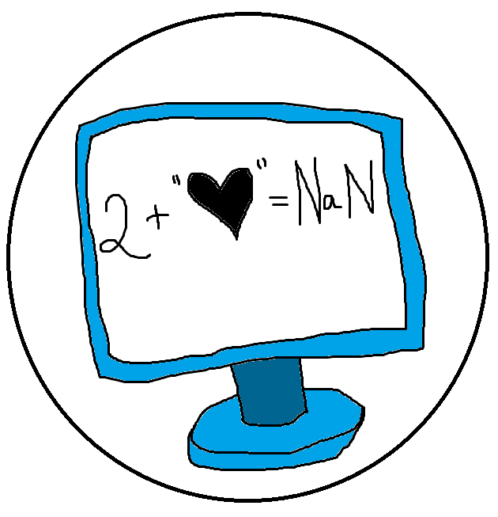
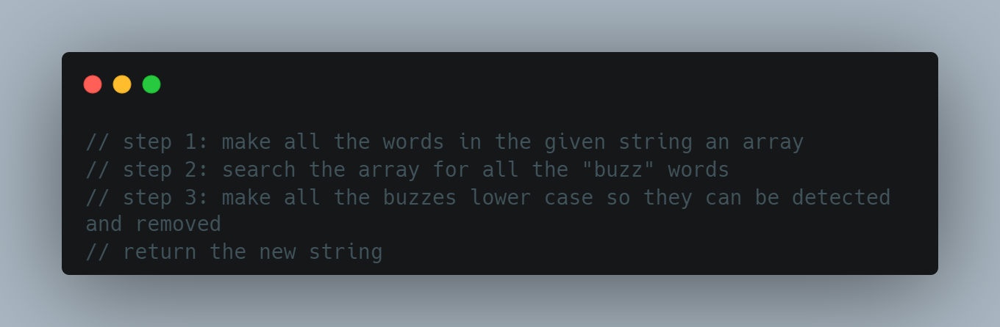

Problem Solving
- 
We learnt a lot about soliving problems this week and different methods and tools that are out there. Some of these included pseudocode, which involves using comments to plan out what will be done in plain English, talking to a rubber ducky, logging to the console, using Google, and understanding how to read error messages. In this post, I will share about how I have used some of these tools and methods to solve some problems.
Thinking it Through
One major problem I came up against during this was when I looked at the exercise and couldn’t figure out where to even begin. This was especially an issue when it came to the Find Scooby challenge. Going from what was basically a blank page to a finished function that somehow was going to end with Scooby being found (?!!) was super daunting. Being stuck before I had even started meant that a number of the methods and tools at hand, such as Google and even analysing the error messages, weren’t really an option – not in the way that using pseudocode was.
- 
For me, the pseudocode method really came in handy as it allowed me to stop and think about what I actually wanted to be doing, and what I wanted to have come out of that. The code shown above is what I started off with when it came to this challenge. Everything was in quotes, written in my own words, and described what was being given to me and how I wanted it to be used in order to find Scooby. It made me so much less freaked out about how many things I might-have-potentially had to maybe have needed to do. Once I had a semblance of an idea of what I needed, it was a bit easier to use the other tools, such as logging tests to the console and having a look on Google to find out about the different functions I could use.
Reflect and Explore
After everything was complete and the function finally worked, it was really helpful to reflect on the process I used – so I could use it again the next time this will, very inevitably, happen. That way, whenever I’m stressed about something that looks daunting, I can remember that I was able to get through a similar situation before and this was how. Though, of course, it’s not one-size fits all and so honing in on the different types of tools and methods for problem solving is something that should most definitely be done as well!